macOS
Plativka Desktop
Apple Silicon (M1 and newer).dmg Intel Mac.dmgTerminal edition
macOS 12 or newer. On the first launch macOS asks for confirmation: System Settings → Privacy & Security → Open Anyway.
Step-by-step guideA free player for the music already on your disk, for macOS, Windows and Linux. Works offline, starts fast, no account and no ads.
Latest version … · Free and open source · MIT license
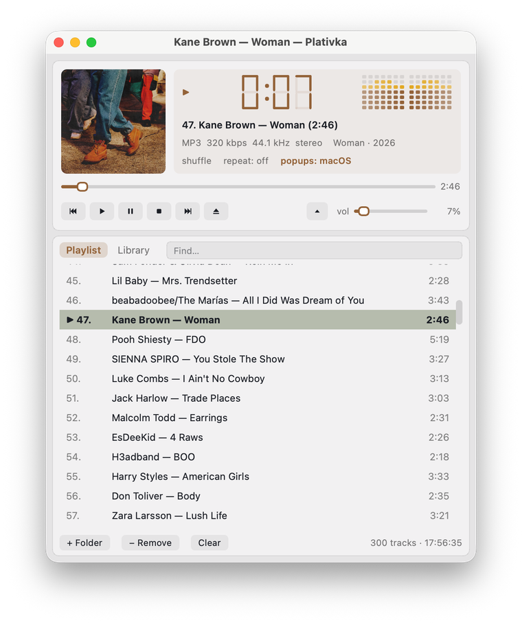
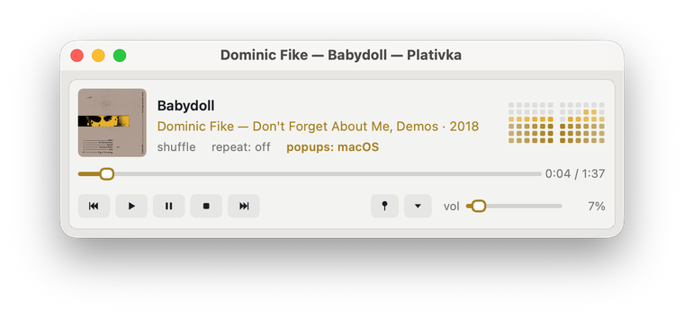
The clock, the level meter, the window and the playlist take their colour from the album art and change with every album. Light, dark or system theme.
The full Winamp view, a compact view in two rows above the playlist, and a mini player small enough for a corner of the screen, on top of all windows.
Plativka's own look, macOS or Windows 11: native-style buttons, sliders and translucency, the same layout. Switch any time, no restart.
Your library by artist and album or by folder, instant search, drag folders into the window, play a whole album with a double-click.
Media keys and headphone buttons, Now Playing, MPRIS on Linux, track notifications with the album cover, a tray icon.
MP3, FLAC, M4A/AAC, OGG/Opus, WAV, APE and WavPack through mpv. Files without tags are named from the file name, old Windows-1251 tags are fixed automatically.
Like a song with a heart and play only your favorites from all folders at once. Moved or renamed your music? The likes follow it.
No pauses between tracks, so live albums and mixes flow on. Volume levelling by album or by track (ReplayGain). One-file albums with a .cue sheet show up as separate tracks.
Pause, skip, turn it down or set the sleep timer from your phone. Scan a QR code, nothing to install. The page looks like Plativka itself, tinted by the cover.
Playlist, position, volume, view and window size are there next time. Tells you when a new version is out. English and Ukrainian interface.
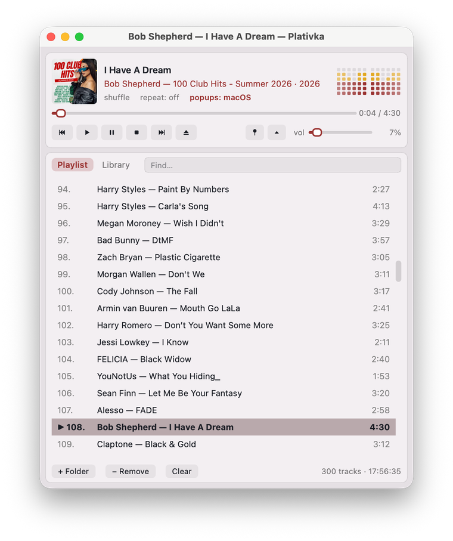
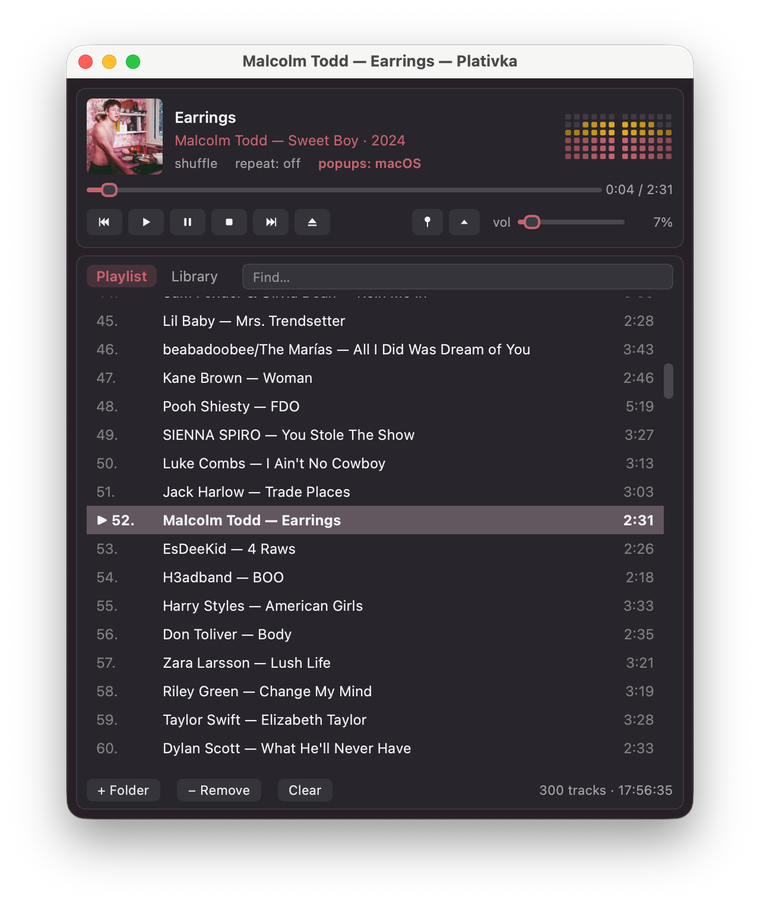


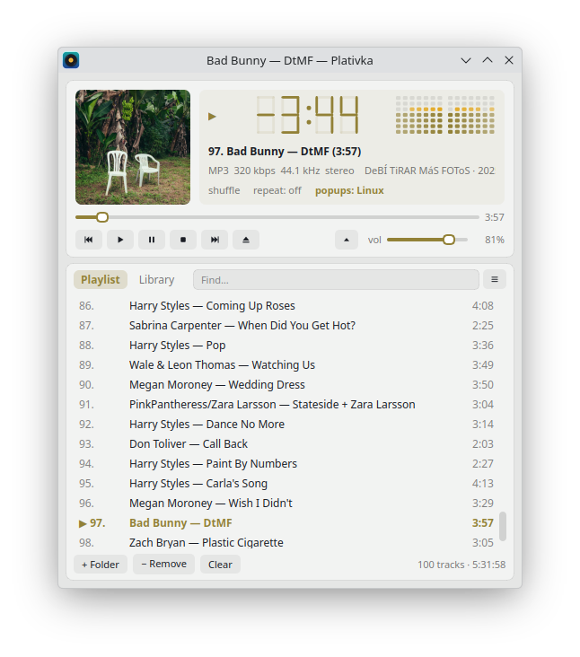
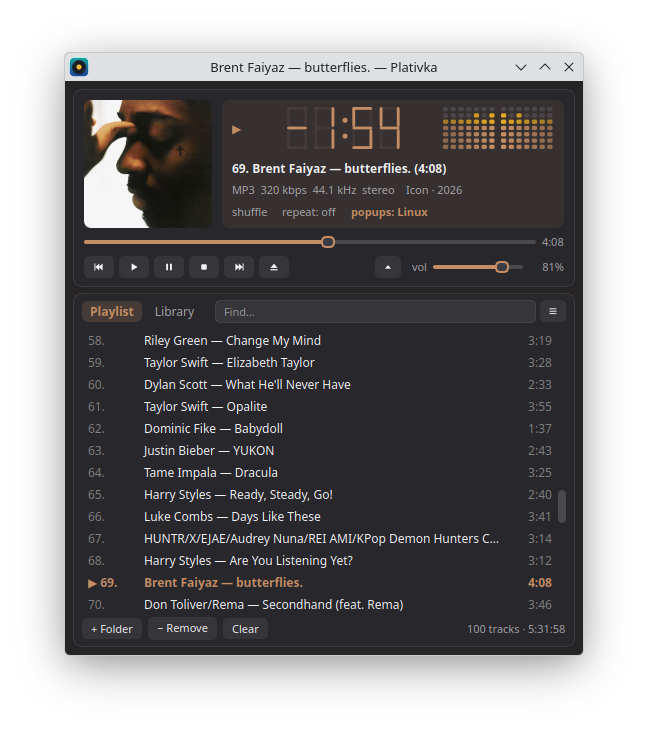
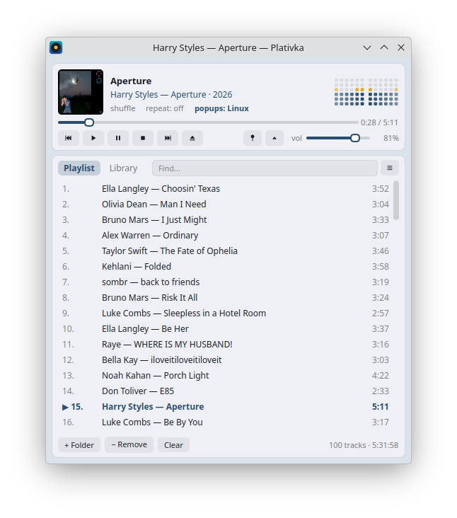
The mini player: just the player strip, pinned above other windows.
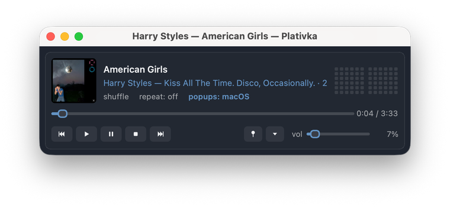
Choose how the window looks: Plativka's own style, macOS or Windows 11. Everything stays where it was; only the buttons, sliders, tabs and translucency change. The colour still comes from the album cover in every skin.
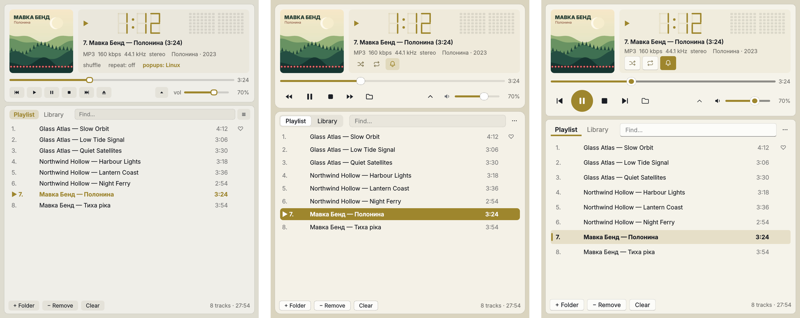
☰ → View → Skin (on a Mac: the View menu) or Shift+T. It switches at once, without a restart. On macOS the macOS skin blurs the desktop behind the window; on Windows 11 every skin has the Mica background.
New in version 1.6.
More about skins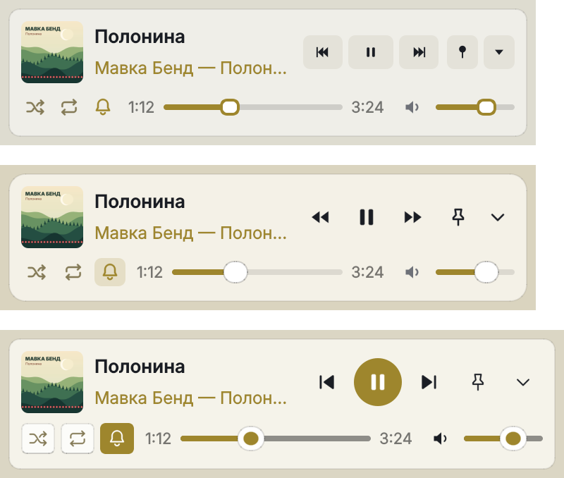
Listening to a long playlist? Tap the heart on the songs you like, then play only them, from all your folders and albums at once.
Why your likes survive: most players remember a like by where the file lies. Move the album to another disk, and the like is gone. Plativka also remembers which song it is (artist, title and length) and finds it in its new place by itself.
How favorites workClick the ♡ next to a song or press F. A filled ♥ stays only next to the songs you liked, so the list isn't covered in empty hearts.
♥ Favorites at the top of the library, or Shift+F. Next to it: Recently added, Most played and Not played for a while.
Remove non-favorites… removes the rest from the list or, if you choose, moves the files to the Trash. Nothing is deleted permanently.
New in 1.5: everyday chores that usually need a separate program.
Covers from the internet. If a file has no cover, Plativka can find it on MusicBrainz or Apple: only a confident match (Океан Ельзи = Okean Elzy), or pick one yourself. Off until you turn it on; only the artist and album name are sent.
How it worksWant this song right after the current one? Shift+N or right-click → Play next; the order of the list stays as it is. On the phone remote, touch and hold a song.
The playlist for the car in one go: numbered files so the stereo keeps your order, the size and free space shown first, nothing overwritten without asking.
The same song as an MP3 and a FLAC, or one file in two folders? Plativka shows them side by side, ticks the best copy, and you decide what goes.
Music plays from the computer to the speakers, and you are on the sofa? Your phone becomes the remote: a web page right in the phone's browser, nothing to install.
Plativka Desktop: ☰ → Playback → Phone remote… → tick Allow control from a phone. Terminal edition: F3, then Space.
Point the phone's camera at the code and open the link. The phone must be on the same Wi-Fi.
The phone remembers the connection. Add the page to the home screen, and next time it opens like an app.
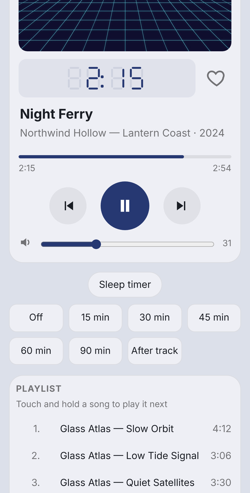
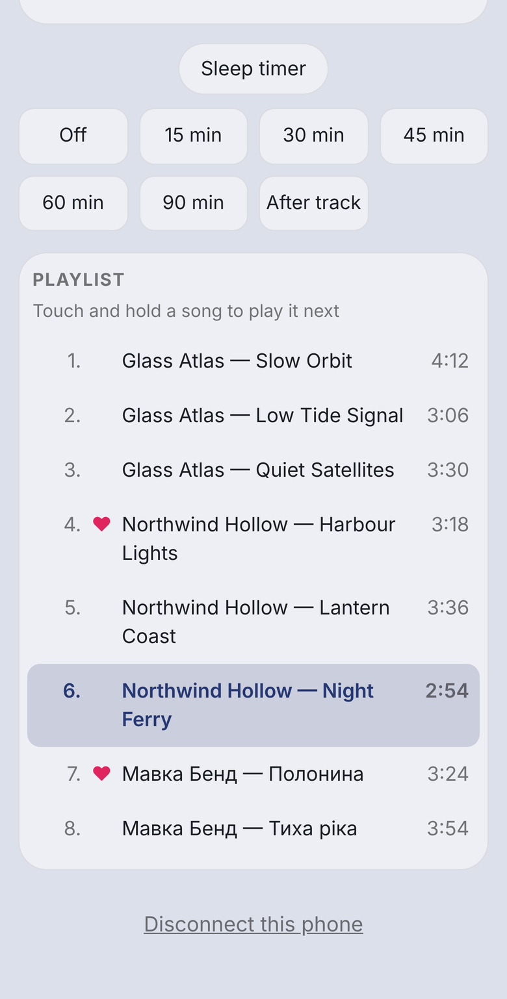
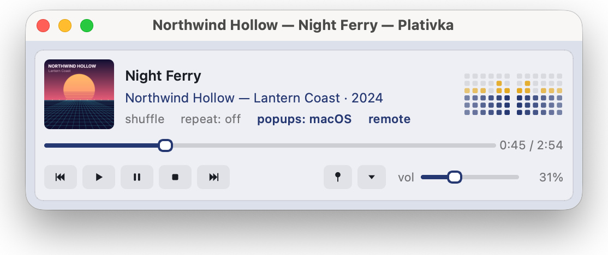
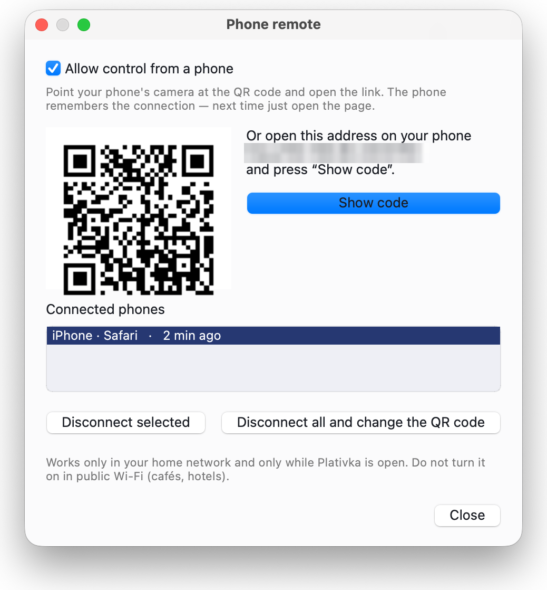
Safe by design. Off until you turn it on, works only in your home network and only for the phones you connected, and can only control the music. No access to files or settings. How the remote works and how it is protected
Plativka Desktop is the main edition. The terminal edition is for people who live in the terminal; you can install both.
macOS 12 or newer. On the first launch macOS asks for confirmation: System Settings → Privacy & Security → Open Anyway.
Step-by-step guideWindows 10 and 11. If SmartScreen appears, click More info → Run anyway — it shows up for every free program without a paid certificate.
Step-by-step guideDebian, Ubuntu, Mint, Fedora, Arch, Manjaro, openSUSE and others. Unpack and run the installer:
tar -xzf plativka-*-linux.tar.gz
cd plativka-*-linux
./install.sh --desktopThe same player as a text interface: the Winamp layout, real album covers in kitty, Ghostty, iTerm2 and WezTerm (pixel-art covers elsewhere), a mini player that shrinks the terminal window, and everything controlled from the keyboard.
About the terminal edition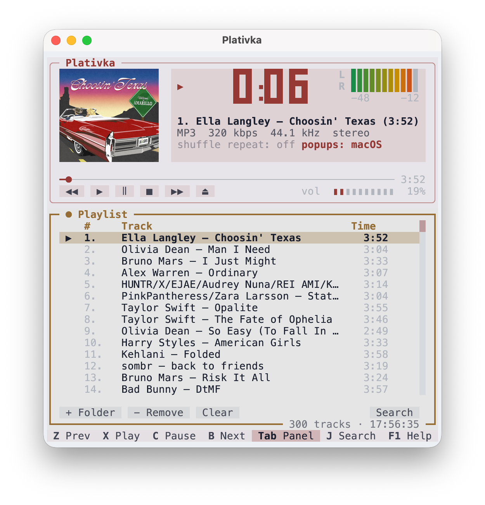
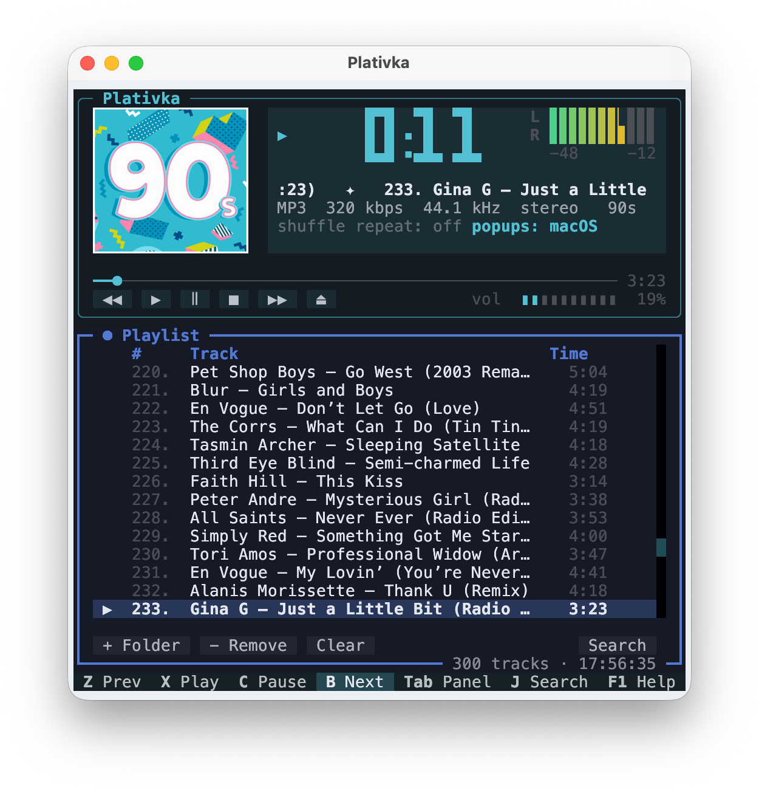
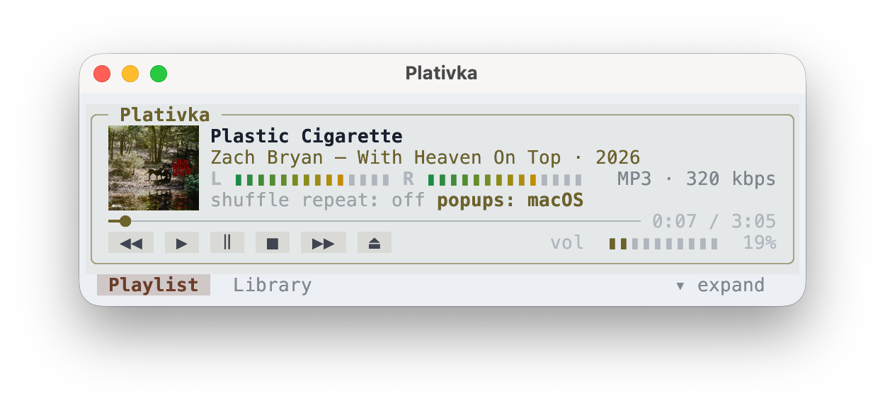